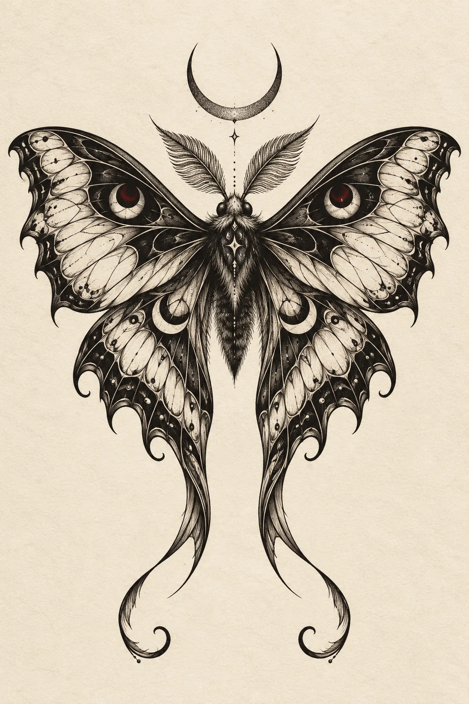

La intuición.
Reúne las imágenes, los símbolos y las referencias que te mueven.
 Tu próxima pieza
Tu próxima pieza Sombra, símbolo y permanencia.
Un universo para llevar en la piel.

01 / OBRA SELECCIONADA
Una pieza a la vez.
Desliza, elige y acércate al detalle.Ilustraciones de muestra del concepto.
NOCTURNO / ESTUDIO I
Alas que parecen guardar un secreto. Simetría delicada, sombras profundas y un pulso casi vivo.
Desliza la obra o usa las flechas.
02 / EL ARTISTA
Cada artista tiene una forma de habitar la sombra.
Este espacio está pensado para mostrar la mirada de Pedro: su historia y los trabajos que mejor cuentan quién es.
03 / ANTES DE LA TINTA
Una historia. Un símbolo.
Una idea que no te suelta.
Reúne las imágenes, los símbolos y las referencias que te mueven.
Piensa en la zona del cuerpo y el tamaño aproximado. La composición empieza ahí.
Comparte tu idea con el artista para hablar del diseño, la sesión y los detalles.
04 / TU PRÓXIMA PIEZA
Empieza con unas líneas.
Prepara un mensaje para tu artista.